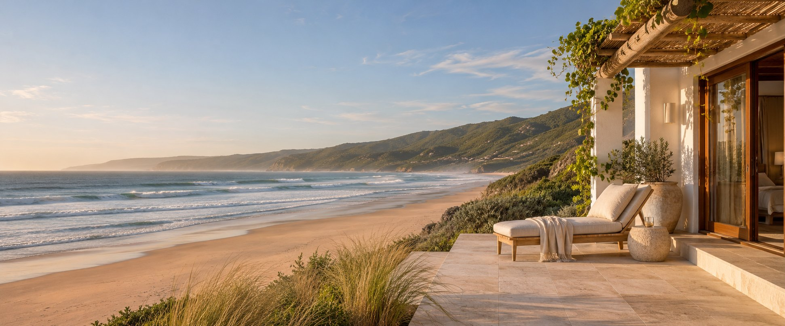
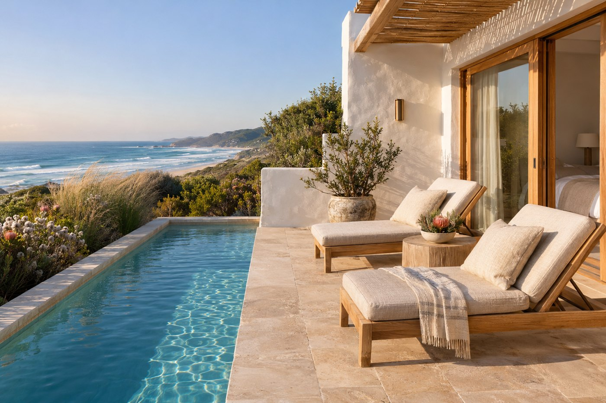

Wake up where the blue begins. A king-size bed, a private balcony and a front-row seat to the sea.
From R2,850 / night

BAREFOOT LUXURY. BEAUTIFULLY SIMPLE.
Ocean air. Unhurried mornings.
A little place to feel like yourself again.
Make a little time.
WELCOME TO SALT & STILL
Somewhere between the dunes and the deep blue, there’s a quieter way to be.
Welcome to our little corner of Wilderness. A coastal hideaway imagined for slow mornings, sandy feet and the luxury of having nowhere else to be.
Think soft linen, something good in your cup, and the ocean setting the pace. Settle in. Stay a little longer.
A feel for life hereROOM TO UNWIND
Natural textures. Thoughtful comforts.
And absolutely no rush to get up.
Wake up where the blue begins. A king-size bed, a private balcony and a front-row seat to the sea.
From R2,850 / night
Soft light, warm textures and fynbos at your window. A tucked-away haven for a slower kind of stay.
From R2,450 / night

THE ART OF TAKING IT EASYTHIS IS YOUR KIND OF BUSY
Our favourite kind of day starts slowly and goes wonderfully off schedule. Drift between the pool and your sun lounger. Find a shady spot. Watch the light change.
Here, the little things are the whole point.
Leave a little room for nothingA BEAUTIFUL PLACE TO GET A LITTLE LOST
Beyond the house, a whole different
kind of wonder is waiting.
Wide-open sand, salt on your skin and the sound of the Indian Ocean. Wilderness is made for long beach walks and stopping simply because the view asks you to.
“Perhaps the best thing you’ll
find here is a little more of yourself.”
BEFORE YOU ARRIVE
The practical bits, so you can get
back to looking forward to it.
In this guest house concept, both suites include a leisurely breakfast, Wi-Fi, parking and access to the shared pool and terrace. The Ocean Suite also has its own sea-facing balcony.
The sample stay runs from check-in at 14:00 to check-out at 10:00. Early arrivals and a little extra time would be arranged with your host, subject to availability.
Wilderness is on the Garden Route in the Western Cape, near George. It’s a coastal base for beach walks, exploring the Touw River and visiting the Wilderness section of Garden Route National Park.
Explore Wilderness on the map ↗Salt & Still is a fictional guest house created as a website portfolio project. You can explore the suites and try the stay planner, but no reservation, payment or enquiry is sent. All rates and property details are illustrative.
THE COAST IS CALLING
Your seaside daydream starts with a date.